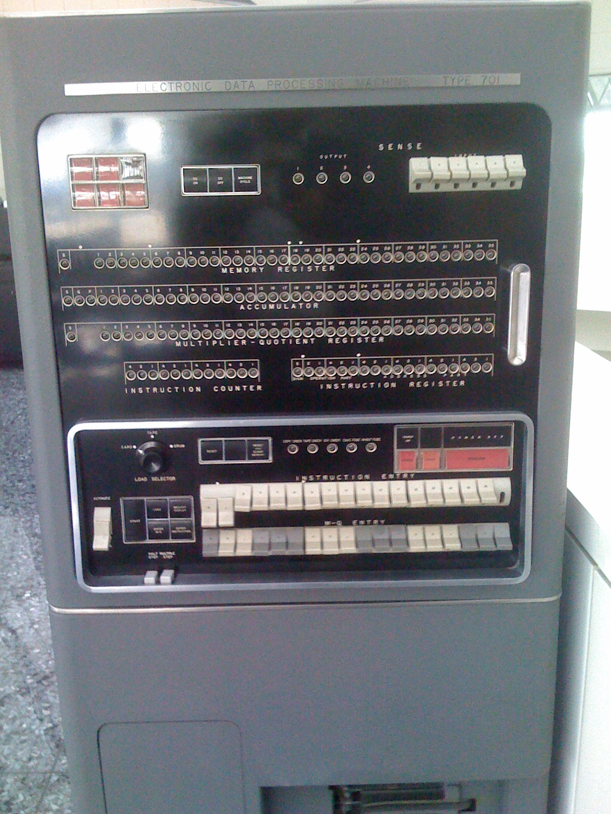
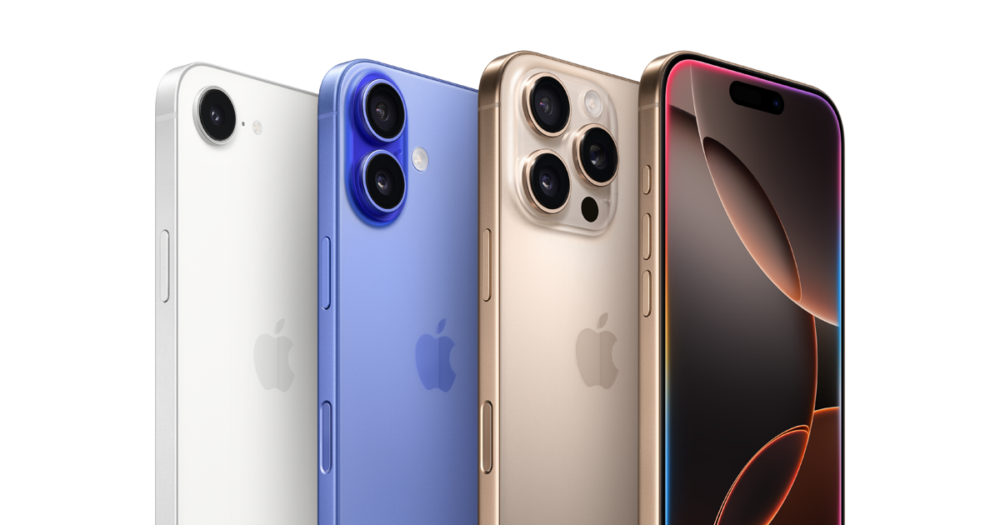

Nakulan JS
1940s: ENIAC
 The ENIAC was the world’s first general-purpose electronic digital computer, used by the U.S. Army for artillery trajectory calculations.
The ENIAC was the world’s first general-purpose electronic digital computer, used by the U.S. Army for artillery trajectory calculations.
1951: UNIVAC I
 The UNIVAC I was the first commercially produced electronic computer in the United States.
The UNIVAC I was the first commercially produced electronic computer in the United States.
1953: IBM 701

The IBM 701, IBM’s first mass-produced scientific computer, marked the company’s entry into electronic computing.
1976: Apple I
 The Apple I, hand-built by Steve Wozniak and sold by Steve Jobs, sparked the personal computing wave.
The Apple I, hand-built by Steve Wozniak and sold by Steve Jobs, sparked the personal computing wave.
1981: IBM PC (5150)
 The IBM PC 5150 set the industry standard for home and business desktop computers.
The IBM PC 5150 set the industry standard for home and business desktop computers.
1984: Macintosh
 Apple’s first Macintosh popularized the graphical user interface (GUI) for home computers.
Apple’s first Macintosh popularized the graphical user interface (GUI) for home computers.
2007: Apple iPhone

The original iPhone revolutionized mobile computing and ignited the smartphone era.